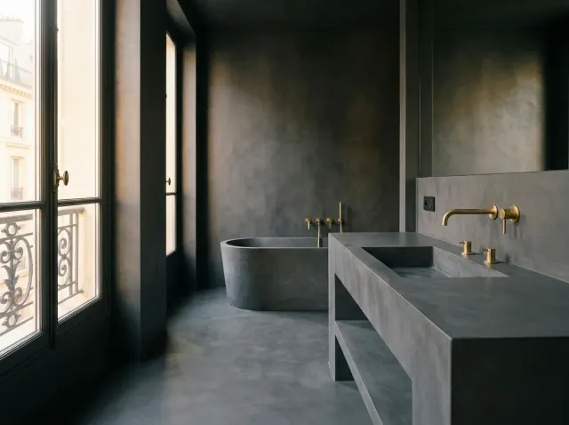
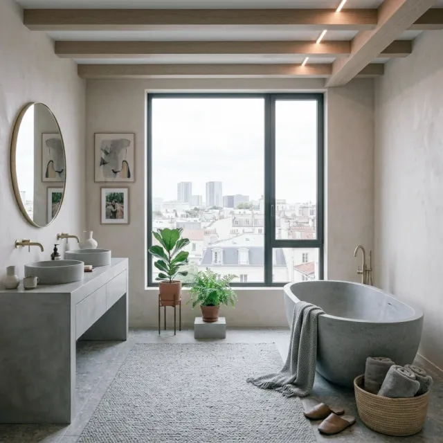

Vasques sur mesure
pièces uniques
Vasques et plans de toilette en béton ciré, résine ou pierre de synthèse, dessinés et réalisés par nos artisans aux dimensions exactes de votre salle de bain.


Vasques et plans de toilette en béton ciré, résine ou pierre de synthèse, dessinés et réalisés par nos artisans aux dimensions exactes de votre salle de bain.
Une vasque du commerce impose ses dimensions, ses formes et son rapport au plan. Une vasque sur mesure inverse la logique : c'est la salle de bain qui décide de ses proportions. Longueur, profondeur, forme de la cuve, position de la robinetterie, hauteur du plan : chaque paramètre se règle pour s'accorder à l'usage et à l'architecture.
Nous dessinons et fabriquons des vasques en béton ciré, en résine ou en pierre de synthèse, simples ou doubles, posées sur plan, intégrées dans un meuble ou suspendues. Chaque vasque est une pièce unique, réalisée par nos artisans dans notre atelier.
La vasque s'intègre à un projet de salle de bain complet, en continuité avec les murs et le sol, notamment lorsque tout est traité en béton ciré.
Une vasque coulée et façonnée dans notre atelier, avec la même teinte que les murs et le sol pour une continuité totale.
Surfaces lisses et peu poreuses, adaptées à un usage intensif. Elles permettent des cuves fines et des formes précises.
Simple ou double vasque, cuve ronde, rectangulaire ou ovale, plan long ou court : tout se dessine après le relevé de la pièce.
Perçage pour la robinetterie, siphon, fixation sur support renforcé : la vasque est posée, raccordée et testée par nos artisans.
Une vasque sur mesure est un ouvrage de précision : chaque cote est relevée sur place et validée avant fabrication.
Nous relevons la pièce, l'emplacement des arrivées et des évacuations, puis nous dessinons la vasque avec vous : taille, forme, hauteur, robinetterie.
Béton ciré, résine ou pierre de synthèse : le matériau, la teinte et la finition sont validés sur échantillon avant toute fabrication.
Un devis gratuit et sans engagement, qui détaille la fabrication, la pose et les raccordements. Le support est renforcé si nécessaire.
La vasque est fabriquée et finie dans notre atelier, avec le temps de séchage et de protection nécessaire avant livraison.
Pose sur le support, perçage, raccordement du siphon et de la robinetterie, essais d'eau, nettoyage. Nous vous remettons un protocole d'entretien.
Une vasque sur mesure se chiffre à l'unité. Le prix varie selon les dimensions, le matériau, la complexité de la forme et le nombre de cuves.
| Prestation | Fourchette HT |
|---|---|
| Vasque sur mesure/ unité | 700 € – 2 500 € |
Ce sont les questions que nous posons au relevé. Elles conditionnent l'usage quotidien de la vasque, bien plus que son apparence.
Une vasque en béton ciré ou en pierre est lourde. Le mur ou le meuble qui la porte doit être renforcé en conséquence. Nous vérifions la solidité du support avant de fixer les dimensions.
Une cuve profonde limite les éclaboussures, mais elle demande de la hauteur sous le robinet. Une cuve peu profonde est plus élégante mais se salit plus. Nous ajustons selon l'usage de la pièce.
Le type de robinet, mural ou sur plan, décide de la position des perçages et des arrivées d'eau. Il se choisit avant de fabriquer la vasque, pas après.
Un nettoyage à l'eau et au savon au pH neutre suffit. Il faut éviter les produits acides ou abrasifs, qui attaquent la protection. Nous remettons un protocole d'entretien à la livraison.
Deux salles de bain avec vasque sur mesure. Retrouvez toutes nos réalisations.


Matériaux, dimensions, entretien, budget : ce qu'il faut savoir avant de commander une vasque sur mesure.
Relevé sur site et devis détaillé gratuits. Réponse sous 24h.